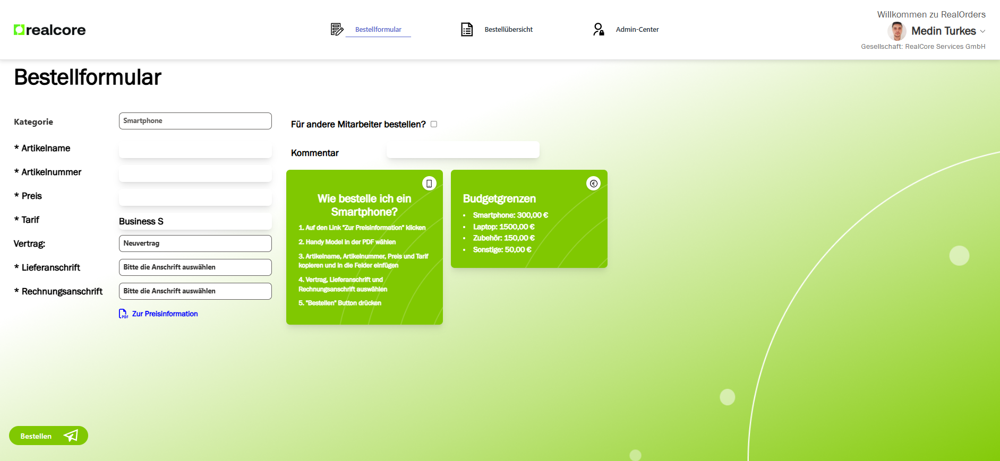

RealOrders is an internal ordering platform developed for the RealCore Group to streamline procurement of equipment, technology, and other essential resources. Designed to simplify the internal purchasing process, the system is integrated with Microsoft services to provide secure authentication and seamless interaction between employees and the procurement team.

Key Features:
- Internal Ordering Process: Employees can place orders for smartphones, laptops, accessories, and miscellaneous items through a structured and budget-controlled process.
- Automated Email Notifications: Order approvals, rejections, and updates are handled via Azure Logic Apps to automate communication between managers and employees.
- Interactive Adaptive Cards: Utilized for approvals and actions directly within emails and Microsoft Teams.
- Microsoft Entra ID Authentication: Secure login with Microsoft 365 (O365) accounts using Single Sign-On (SSO).
- Azure Functions Backend: The backend is developed with C# to manage data, trigger workflows, and interact with APIs.
- Admin Center: A dedicated admin panel allows managers to review, approve, or modify employee orders and track expenditures.
- Employee Data Integration: Microsoft Graph API is used to fetch employee information, ensuring smooth and accurate order processing.
Technical Specifications:
- Frontend Technologies: React + TypeScript for fast, component-driven UIs.
- Backend: C# Azure Functions with HTTP triggers and event-driven logic.
- Authentication: Microsoft Entra ID (formerly Azure AD) using MSAL for authentication and user management.
- Email Automation: Azure Logic Apps handle automated email workflows for order confirmations and approvals.
- Data Management: Employee data is retrieved via Microsoft Graph API, ensuring real-time synchronization with corporate directories.
- Security: Secure data handling through HTTPS endpoints and token-based authorization.
Order Categories:
- Smartphones: Orders for business smartphones, including new contracts and upgrades via Telekom partners.
- Laptops & Accessories: Laptop and accessory orders facilitated through Nösse Datentechnik GmbH.
- Miscellaneous: Office supplies, eBooks, and other items not covered under standard categories.
How It Works:
- Employees log in using their Microsoft 365 accounts via the O365 login page.
- Orders are submitted through intuitive forms, categorized under smartphones, laptops, or miscellaneous items.
- Orders are routed to managers for approval through Adaptive Cards and Azure Logic Apps.
- Upon approval, the procurement team places the order and employees are notified about the status.